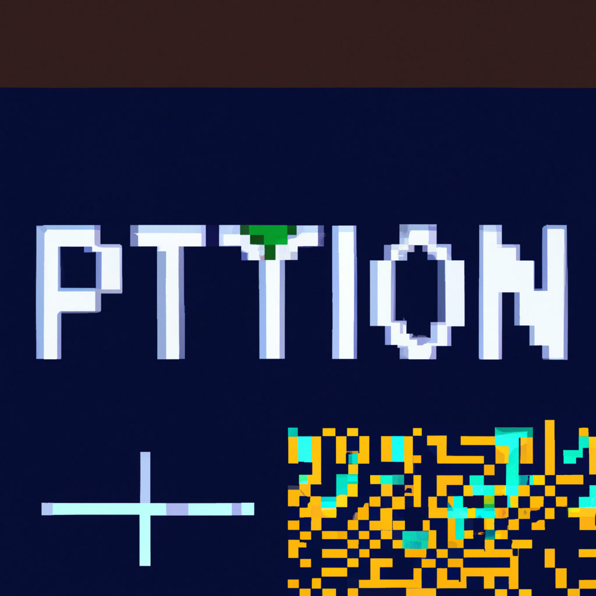

The future of Python and AI.
Python and AI are the future of software development, and I'm here to talk about why. First, Python is an incredibly powerful and flexible language, and it's becoming increasingly popular for a variety of tasks. From web development to data science, Python is quickly becoming a go-to language for developers. At the same time, AI is becoming more and more advanced, and it's being used to automate and optimize a variety of tasks. By combining the two, developers can create powerful and efficient